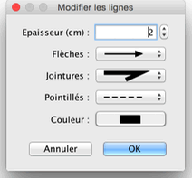

| Modification des lignes et des courbes | |||
Vous pouvez modifier la position des lignes avec la souris, après les avoir sélectionnées dans le plan. Quand une ligne est sélectionnée dans le plan, vous pouvez déplacer n'importe lequel de ses points, à l'aide des indicateurs qu apparaissent à chacun de ses points.
Quand le pointeur de la souris survole l'un de ces indicateurs, celui-ci change d'aspect pour indiquer que vous pouvez
glisser-déposer ce point pour le déplacer.  Dans le panneau de la ligne, vous pouvez modifier l'épaisseur de la ligne sélectionnée, les flèches à chaque extrémité, le style des jointures entre les lignes, le style de pointillé et sa couleur. La dernière option de la liste déroulante Jointures permet de dessiner une courbe plutôt qu'une ligne brisée. |

|